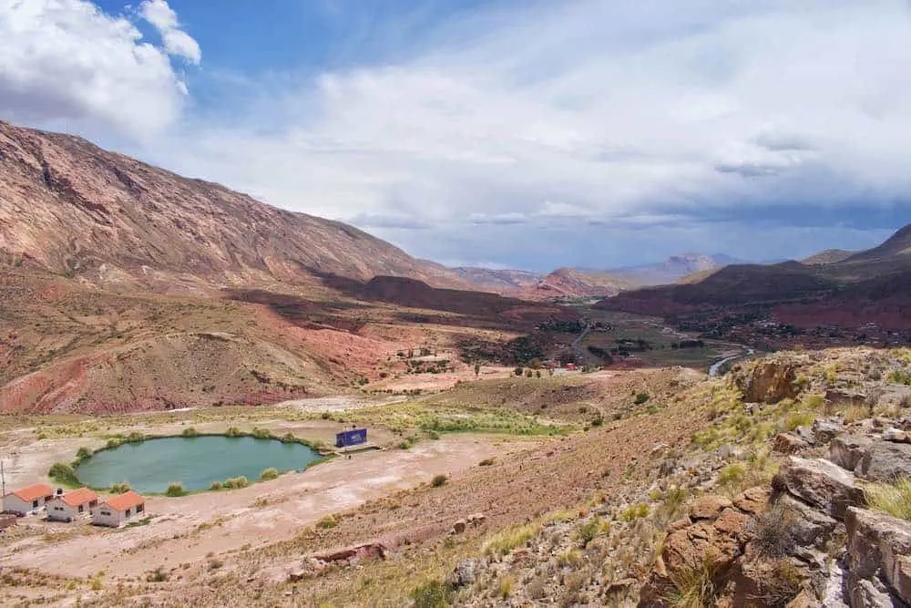
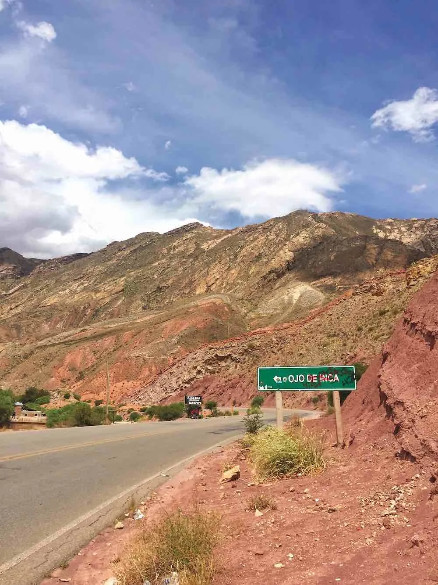
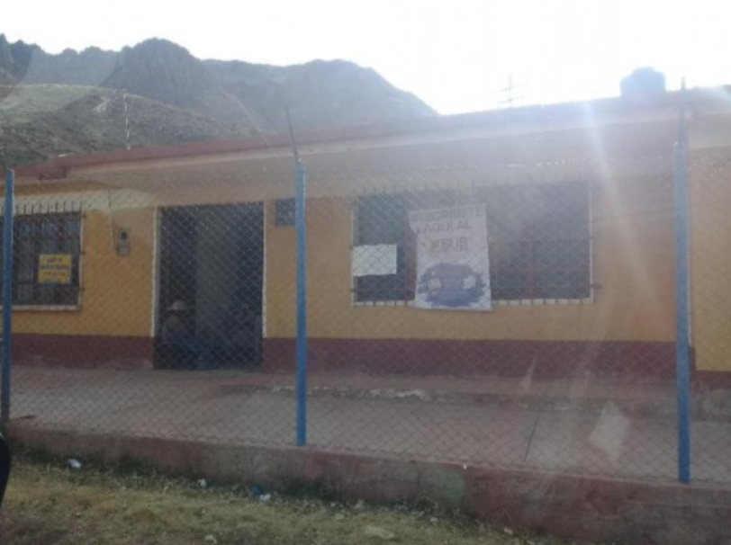
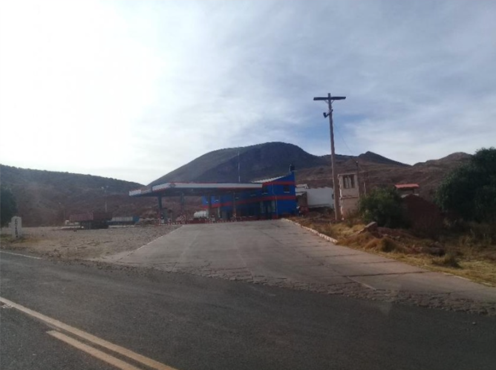
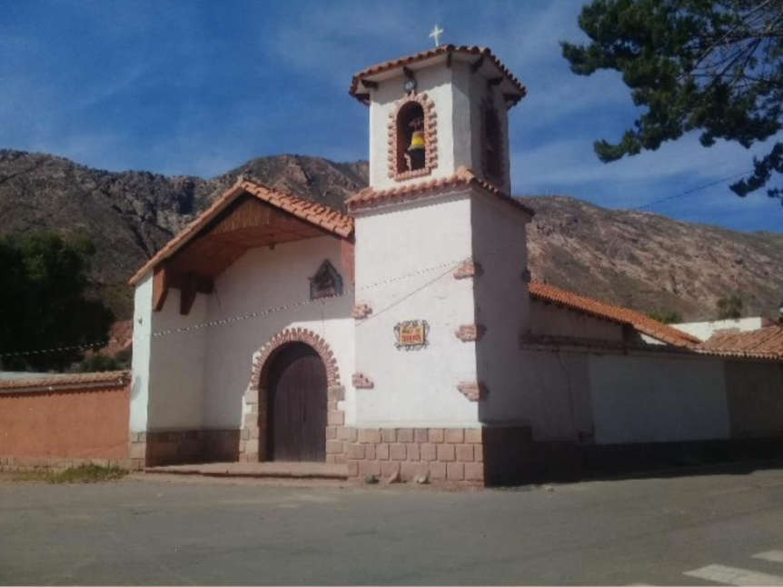
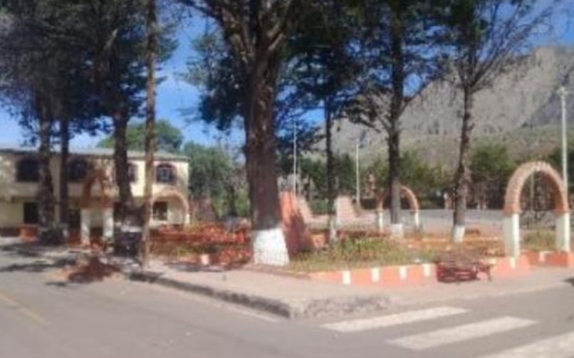

Bienestar, naturaleza y energía ancestral
Laguna volcánica con aguas termales y energía ancestral.







Aguas Místicas es una agencia de viajes y operadora de turismo dedicada a brindar experiencias únicas en el Ojo del Inca y sus alrededores. Nos enfocamos en el bienestar, la conexión con la naturaleza y la cultura andina, ofreciendo servicios seguros, organizados y personalizados para cada visitante.